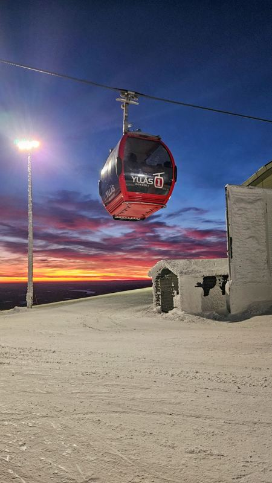
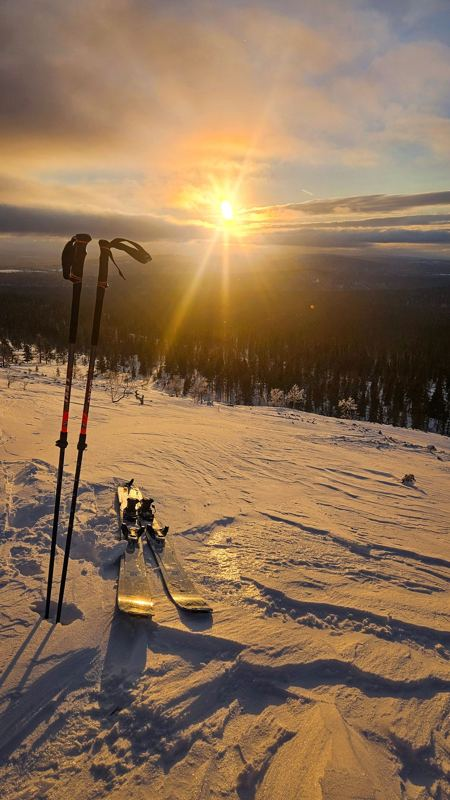

”We had a wonderful 10 days, at times in temperatures as low as −30°C. Ylläsjärvi is lovely in winter, with plenty of winter activities nearby.”
Winter at Ylläs Kajo
A season of snow, light and silence
From the blue days of polar night to the bright spring sun, winter in Ylläs is long and full of variety.

Downhill skiing
Ylläs is one of Finland's largest ski resorts. The gondola base station is about a kilometre from the cabin.
- Ylläs Ski Resort Ylläsjärvi about 1 km
- Equipment rentals near the slopes
- Ski storage and waxing stand in the yard

Cross-country skiing
The extensive Ylläs ski-track network starts almost at your door: the nearest track is under 500 m away. Trail cafés reward you along the way.
- Ski track under 500 m away
- Winter fat-bike routes nearby
- Drying cabinet for wet gear

Northern lights & polar night
On clear nights the aurora can be seen right from the yard. In December's polar night the days glow blue and the atmosphere is unique.
- A dark, quiet yard for aurora watching
- Christmas and New Year in Lapland
- Snowmobile and husky safaris nearby

A warm home after the cold
The fireplace, sauna and underfloor heating make coming home after a −30°C day a pleasure.
- Fireplace and firewood
- Private sauna
- EV charging in the yard
Guest reviews
What our guests say
Excerpts from Airbnb and Booking.com reviews, translated into English.
”A very good, practical and well-equipped place close to the slopes. Valtteri is a very responsive host with great advice – recommended!”
”The key was waiting in the lock box and the cabin was clean and warm when we arrived. Excellent location.”